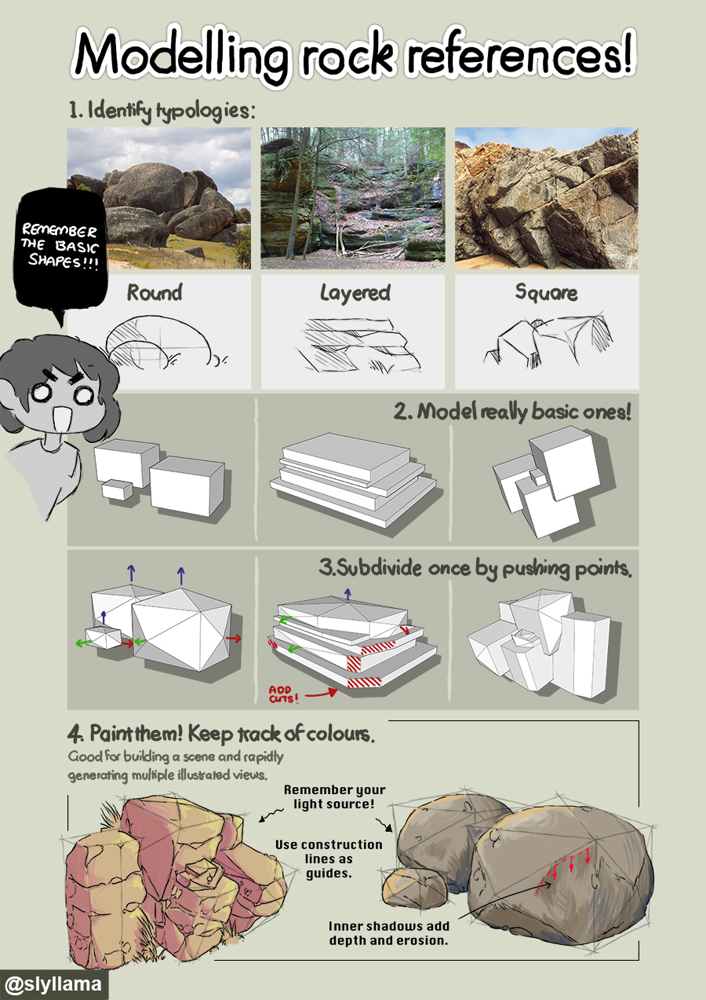
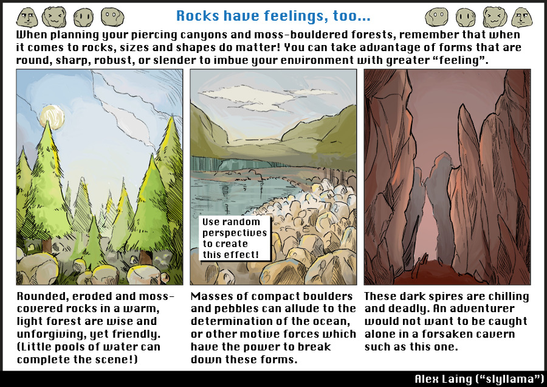

Note: this page contains unfinished or legacy content which is subject to change or removal! If you spot any errors in the content or grammar, please do let me know.
A quick guide on drawing rocks by beginning from simple forms! By selecting the type of shapes you use to construct them, you can have an impact on the type of atmosphere these rocks give off.

